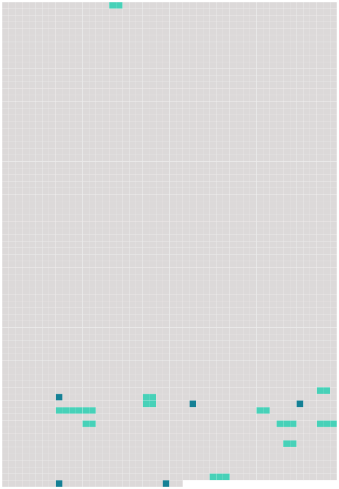

Longueur nb maillons : 16 mentions |
|
Par miracle, il n'y a pas eu de blessé aux étages supérieurs où dormaient [huit personnes] [160 phrases]
[ article ]
Une dizaine d'heures après l'explosion, [les locataires] étaient de retour pour récupérer quelques affaires.
Après l'intervention d'une vingtaine de pompiers de Belfort Nord, Belfort Sud et de Delle commandés par le lieutenant Gilles Trouttet, leurs collègues sont revenus, mardi après-midi, au 13 rue du Tramway, pour aider [les locataires] à récupérer quelques affaires dans [leur] appartement.
L'escalier étant détruit, la grande échelle était la seule manière pour [eux] d'y accéder.
Les pompiers ont mis en action leur matériel, [les différents habitants de l'immeuble] se succédant dans la nacelle de la grande échelle du centre de secours principal.
La sollicitude des soldats du feu particulièrement appréciée par [les sinistrés] [4 phrases]
[ article ]
« Six [des huit locataires] ont trouvé à se loger chez des amis ou des parents », explique Pascal Martin. [7 phrases]
[ article ] [11 phrases] Réveillés en sursaut, [les huit locataires] , voisins de l'appartement du rez-de-chaussée où l'explosion s'est produite, ont ouvert les yeux sur un spectacle de désolation : [leur] appartement n'était plus qu'un amas de ce qui restait des murs et de [leur] mobilier. |
 |
Il est possible de télécharger la ressource sur la page Ortolang |
Si vous avez des questions ou vous voyez des erreurs, merci d'envoyer un mail à silvia.federzoni89@gmail.com |